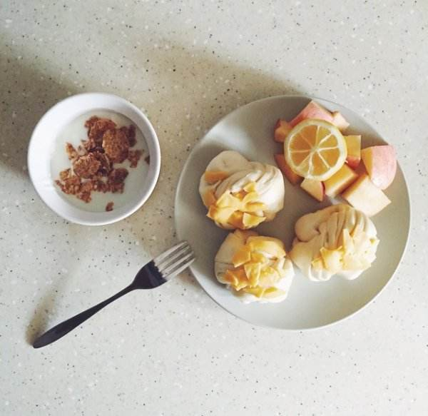
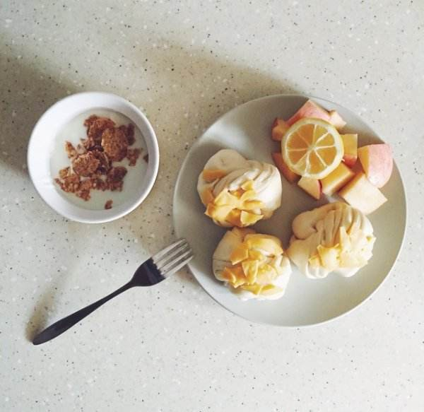

一个习惯让你后悔！肝脏因此遭殃！
文章出处:
人气：发表时间：2017-05-19 10:43
肝脏在体内是重要的解毒器官，肝脏的许多功能都是十分重要的。如果肝脏受损，那对健康是有着极大的影响的。因此肝脏的日常养护显得尤为重要!但是有些习惯，如果你平时不注意，对肝脏可是莫大的损伤!
1.熬夜晚睡。熬夜最容易熬出肝病，究其原因是睡眠过程中，人体会进入自我修复模式，经常熬夜既导致睡眠不足，身体抵抗力下降，又会影响肝脏夜间的自我修复。“晚睡族”应尽量调整作息时间，最好每晚11点前入睡，保证每晚睡够7～8小时。
2.早起不排尿。体内排毒可以通过排尿、排汗、排便进行。早起床尽快排尿，可以将累积一整夜的毒素及时排出体外，避免毒素滞留体内，导致肝脏“中毒”。
3.暴饮暴食。很多人知道，东西吃太多会增加胃肠负担，诱发脂肪肝。暴饮暴食既损害胃肠道健康，也容易造成体内自由基大大增加。人体内的自由基越多，肝脏功能受损就越严重。

4.不吃早餐。早餐有助于中和胃酸和保护肝脏，减少胰腺炎、糖尿病、胆结石、便秘等多种疾病的危险。健康早餐可延长饱腹感，避免肝脏受损。
5.吃药太多。《英国临床药理学杂志》刊登一项研究称，长期服用止痛药等药物，会加大肝脏解毒负担，导致肝脏损伤。多种药物及其代谢产物容易引起肝脏损害，导致药物性肝炎。这些药物包括抗生素、解热镇痛药、抗精神病药物、抗抑郁药物、抗癫痫药、镇静药、抗甲亢药、抗肿瘤药、降糖药和心血管药等。因此，服药必须严格遵照医嘱，在医生指导下服用。
6.加工食物。很多加工食物中添加了多种防腐剂、色素、人工甜味剂等食品添加剂。这些添加成分含有多种人体较难分解的化学物质，进入人体后会增加肝脏解毒负担。
7.偏爱油炸食品。美国哥伦比亚广播公司报道的一项研究发现，吃油炸食品一个月即可导致肝脏发生明显变化，引发类似肝炎的酶的变化。不健康食用油会增加心脏病和肝病的危险。相对而言，橄榄油和芝麻油更健康。
8.吃半生不熟或烧焦食物。半生不熟的食物或者烹饪过头的烧焦食物也容易导致肝脏受损。研究发现，醉虾、生蚝和半生不熟的贝类常带有细菌和寄生虫，容易导致肝病恶化，甚至诱发肝昏迷。
9.过量饮酒。过量饮酒会降低肝脏净化血液的能力，导致体内毒素增加，诱发肝脏损伤及多种疾病。另外，酗酒还容易导致肝脏中毒，诱发肝炎。长期过量饮酒则容易导致肝硬化。每天饮高浓度酒超过两杯(25毫升)就会伤肝。
1.熬夜晚睡。熬夜最容易熬出肝病，究其原因是睡眠过程中，人体会进入自我修复模式，经常熬夜既导致睡眠不足，身体抵抗力下降，又会影响肝脏夜间的自我修复。“晚睡族”应尽量调整作息时间，最好每晚11点前入睡，保证每晚睡够7～8小时。
2.早起不排尿。体内排毒可以通过排尿、排汗、排便进行。早起床尽快排尿，可以将累积一整夜的毒素及时排出体外，避免毒素滞留体内，导致肝脏“中毒”。
3.暴饮暴食。很多人知道，东西吃太多会增加胃肠负担，诱发脂肪肝。暴饮暴食既损害胃肠道健康，也容易造成体内自由基大大增加。人体内的自由基越多，肝脏功能受损就越严重。

4.不吃早餐。早餐有助于中和胃酸和保护肝脏，减少胰腺炎、糖尿病、胆结石、便秘等多种疾病的危险。健康早餐可延长饱腹感，避免肝脏受损。
5.吃药太多。《英国临床药理学杂志》刊登一项研究称，长期服用止痛药等药物，会加大肝脏解毒负担，导致肝脏损伤。多种药物及其代谢产物容易引起肝脏损害，导致药物性肝炎。这些药物包括抗生素、解热镇痛药、抗精神病药物、抗抑郁药物、抗癫痫药、镇静药、抗甲亢药、抗肿瘤药、降糖药和心血管药等。因此，服药必须严格遵照医嘱，在医生指导下服用。
6.加工食物。很多加工食物中添加了多种防腐剂、色素、人工甜味剂等食品添加剂。这些添加成分含有多种人体较难分解的化学物质，进入人体后会增加肝脏解毒负担。
7.偏爱油炸食品。美国哥伦比亚广播公司报道的一项研究发现，吃油炸食品一个月即可导致肝脏发生明显变化，引发类似肝炎的酶的变化。不健康食用油会增加心脏病和肝病的危险。相对而言，橄榄油和芝麻油更健康。
8.吃半生不熟或烧焦食物。半生不熟的食物或者烹饪过头的烧焦食物也容易导致肝脏受损。研究发现，醉虾、生蚝和半生不熟的贝类常带有细菌和寄生虫，容易导致肝病恶化，甚至诱发肝昏迷。
9.过量饮酒。过量饮酒会降低肝脏净化血液的能力，导致体内毒素增加，诱发肝脏损伤及多种疾病。另外，酗酒还容易导致肝脏中毒，诱发肝炎。长期过量饮酒则容易导致肝硬化。每天饮高浓度酒超过两杯(25毫升)就会伤肝。
此文关键字：一个,习惯,让你,后悔,肝脏,因此,遭殃,肝脏,在,